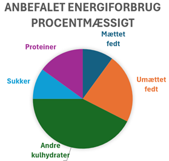

Hvorfor skal jeg være opmærksom på hvad jeg spiser.
Dårlige madvaner kan lede til mange sygdomme, blandt anden overvægt diabetes og hjerte-kar-sygdomme.
Det vigtigste

Man skal passe på at man ikke spiser for meget noget mad fylder mindre end noget andet mad mens det kunne indeholde lige så mange kalorier. Man kan fx spise meget nemmere den samme mængde kalorier i sukker end i salat, det kan føre til at man ubevist spiser flere kalorier end men har brug for og det kan føre til overvægt.
Det meste mad er ikke nødvendigvis usundt, men der findes usunde mængder at spise maden. sundhedsstyrelsen anbefaler at spise varieret, de rekommanderer at 25-40% af energien kommer fra fedt, 45-60% af energien kommer fra kulhydrater, hvor max 10% af energien fra kulhydrater er fra sukker og 10-20% af energien kommer fra proteiner, være opmærksom på at fedt er over doblet så energi tæt som kulhydrater og proteiner, så man skal spise mindre af det end andre energikilder til at opnå sin energibehov.
Være opmærksom at de her anbefalinger også tager i udgangspunkt om hvad er bæredygtigt for samfundet, man kan fx godt spise mere protein end det er anbefalet, men det vil ikke være godt for klimaet
Fedt
Det er rekommanderet at du spiser hovedsageligt umættet fedt, hvilket findes i fisk, nødder og planteolier, dermed skal du undgå at spise for meget mættet fedt, som findes i smør, kød og nogle vegetabilske produkter som fx kokosolie, det er anbefalet at max 10% af dit energiindtag kommer fra mættet fedt. Fedt er næsten dobbelt så høj energi densitet som protein, kulhydrater og fibre, hvilket betyder at man skal spise mindre af det til at dække din energibehov. Fedt er vigtig for levering af vitaminer, det er derfor det er anbefalet at 25-40% af din energi indtag kommer fra fedt.